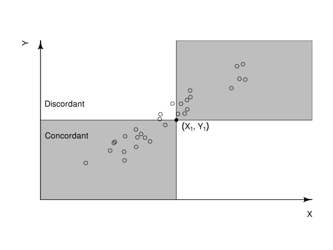

![]()
# remotes::install_github("moseleybioinformaticslab/icikendalltau)
# install.packages("microbenchmark")
library(ICIKendallTau)TL;DR
Check out our {ICIKendallTau} R package if you want access to a fast version of Kendall-tau correlation in R (Robert M. Flight and Moseley 2022b) with only a few dependencies.
Kendall Tau??
Yes, Kendall-tau correlation! It is a rank based correlation based on the number of concordant and discordant pairs of points. This graphic from Wikipedia explains it really well (Wikipedia, n.d.).
knitr::include_graphics("Concordant_Points_Kendall_Correlation.svg")
This is a really useful correlation to use if you don’t want to have to worry about how linearly related things are, just whether the points from two samples go in the same direction or not. In addition, we think there is a neat variant we can make to incorporate the presence of missing values when they are missing not at random, and we have a preprint on that that I am working on revising (Robert M. Flight, Bhatt, and Moseley 2022).
Need for Speed!
However, there is an issue with the basic Kendall-tau algorithm. It is slower than molasses going uphill in January (as my parents used to say). Especially as we increase to correlations calculated using tens of thousands of features in both x and y.
x_large = rnorm(10000)
y_large = rnorm(10000)
microbenchmark::microbenchmark(cor(x_large, y_large, method = "kendall"),
times = 20)Unit: seconds
expr min lq mean median
cor(x_large, y_large, method = "kendall") 1.086599 1.104935 1.146724 1.127946
uq max neval
1.137544 1.417044 20That took a full second! And the size of things we frequently want to calculate for eukaryotic based transcriptomics are 2X - 4X that size, and across many, many samples.
So if we can speed it up, that would be awesome.
I will note through all of this work, that I’ve already been through this once in the development of our {ICIKendallTau} package, so I already know the answer. However, I felt it would be useful to work through all of this again to help others who might be looking at similar types of problems. And yes, some of the below code seems silly, but they are first stabs at an implementation.
Differences of Signs
The simplest way to find the concordant and discordant pairs is to generate all the possible pair indices of the points, and then compare their directions; the same direction of a pair in both X and Y means they are concordant, and different directions means they are discordant.
And in fact, that is exactly what is happening in the C code for R’s covariance / correlation code, iterating over each pair of points (k and n1; snippet shown here from lines 108 - 118 of file src/library/stats/src/cov.c in R-4.3.0).
else { /* Kendall's tau */ \
for(n1=0 ; n1 < k ; n1++) \
if(!(ISNAN(xx[n1]) || ISNAN(yy[n1]))) { \
xm = sign(xx[k] - xx[n1]); \
ym = sign(yy[k] - yy[n1]); \
\
COV_SUM_UPDATE \
} \
} \R Based, Copy All Pairs
What can we do in R that is similar? We can generate all the pairwise indices, create actual vectors, and then get the signs of the differences maybe?
reference_ici = function(x, y)
{
n_x = length(x)
n_y = length(y)
pairs = combn(n_x, 2)
x_pairs = rbind(x[pairs[1, ]],
x[pairs[2, ]])
y_pairs = rbind(y[pairs[1, ]],
y[pairs[2, ]])
x_sign = sign(x_pairs[1, ] - x_pairs[2, ])
y_sign = sign(y_pairs[1, ] - y_pairs[2, ])
x_y_sign = x_sign * y_sign
sum_concordant = sum(x_y_sign > 0)
sum_discordant = sum(x_y_sign < 0)
x_is_dup = duplicated(x)
x_dup = x[x_is_dup]
x_tied_values_t1 = table(x_dup) + 1;
y_is_dup = duplicated(y)
y_dup = y[y_is_dup]
y_tied_values_t2 = table(y_dup) + 1
x_tied_sum_t1 = sum(x_tied_values_t1 * (x_tied_values_t1 - 1)) / 2
y_tied_sum_t2 = sum(y_tied_values_t2 * (y_tied_values_t2 - 1)) / 2
t_0 = n_x * (n_x - 1) / 2
k_denominator = sqrt((t_0 - x_tied_sum_t1) * (t_0 - y_tied_sum_t2))
k_numerator = sum_concordant - sum_discordant
k_tau = k_numerator / k_denominator
k_tau
}Let’s see how long this takes as a baseline, and how it compares to the {stats::cor} function.
set.seed(1234)
x = rnorm(1000)
y = rnorm(1000)
microbenchmark::microbenchmark(cor(x, y, method = "kendall"),
reference_ici(x, y),
times = 20)Unit: milliseconds
expr min lq mean median
cor(x, y, method = "kendall") 11.44744 12.47315 12.84324 13.07735
reference_ici(x, y) 351.74901 368.20867 392.19704 387.35215
uq max neval
13.28316 13.63687 20
417.69942 432.55782 20Not so great. Not that surprising, given the main correlation algorithm in R is written in C. Let’s see if we can speed that up. Although our code seems vectorized here, there is significant time taken in creating the large matrices to hold the pair indices, and then create the pairs themselves. Therefore, if we can avoid the creation of those large matrices, we can probably improve the speed.
R Based, Increment Count
iterators_ici = function(x, y)
{
n_entry = length(x)
sum_concordant = 0
sum_discordant = 0
for (i in seq(1, n_entry - 1)) {
for (j in seq(i + 1, n_entry)) {
sum_concordant = sum_concordant + ((sign(x[i] - x[j]) * sign(y[i] - y[j])) > 0)
sum_discordant = sum_discordant + ((sign(x[i] - x[j]) * sign(y[i] - y[j])) < 0)
}
}
k_numerator = sum_concordant - sum_discordant
x_is_dup = duplicated(x)
x_dup = x[x_is_dup]
x_tied_values_t1 = table(x_dup) + 1;
y_is_dup = duplicated(y)
y_dup = y[y_is_dup]
y_tied_values_t2 = table(y_dup) + 1
x_tied_sum_t1 = sum(x_tied_values_t1 * (x_tied_values_t1 - 1)) / 2
y_tied_sum_t2 = sum(y_tied_values_t2 * (y_tied_values_t2 - 1)) / 2
t_0 = n_entry * (n_entry - 1) / 2
k_denominator = sqrt((t_0 - x_tied_sum_t1) * (t_0 - y_tied_sum_t2))
k_numerator = sum_concordant - sum_discordant
k_tau = k_numerator / k_denominator
k_tau
}microbenchmark::microbenchmark(cor(x, y, method = "kendall"),
reference_ici(x, y),
iterators_ici(x, y),
times = 20)Unit: milliseconds
expr min lq mean median
cor(x, y, method = "kendall") 11.55812 12.49837 12.83441 12.69495
reference_ici(x, y) 357.29120 371.24522 387.07048 378.65192
iterators_ici(x, y) 279.28479 283.04712 289.51380 284.79317
uq max neval
13.19846 14.45556 20
403.50524 438.96896 20
290.43204 335.47143 20Allright! We’ve got some decent improvement over our base attempt. We also know, thanks to the SciPy project, that there is a better way to do get the number of concordant and discordant pairs (which is what we use in {ICIKendallTau}). Let’s see if we can manage that in pure R, and see if it helps us out any.
R Based, Sort
sort_ici = function(x, y)
{
get_sort = function(values)
{
value_order = order(values, method = "radix")
}
compare_self = function(x){
n_entry = length(x)
match_self = vector("integer", n_entry)
match_self[1] = 1L
idx = 2
for (i in seq(2, n_entry)) {
if (x[i] != x[(i - 1)]) {
match_self[idx] = 1L;
} else {
match_self[idx] = 0L;
}
idx = idx + 1
}
return(match_self)
}
compare_both = function(x, y)
{
n_entry = length(x)
match_self = vector("integer", n_entry + 1)
match_self[1] = 1L
idx = 2
for (i in seq(2, n_entry)) {
if ((x[i] != x[(i - 1)]) || (y[i] != y[(i - 1)])) {
match_self[idx] = 1L
} else {
match_self[idx] = 0L
}
idx = idx + 1
}
match_self[n_entry + 1] = 1
return(match_self)
}
count_rank_tie = function(ranks)
{
dup_ranks = duplicated(ranks)
ranks2 = ranks[dup_ranks]
number_tied = table(ranks2) + 1
return(list(ntie = sum(number_tied * (number_tied - 1)) / 2,
t0 = sum(number_tied * (number_tied - 1) * (number_tied - 2)) / 2,
t1 = sum(number_tied * (number_tied - 1) * (2 * number_tied + 5))))
}
which_notzero = function(x){
notzero = vector("integer", length(x))
idx = 1L
for (i in seq(1, length(x))) {
if (x[i] != 0) {
notzero[idx] = i - 1
idx = idx + 1L
}
}
keep_loc = seq(1, idx - 1)
notzero = notzero[keep_loc]
return(notzero)
}
kendall_discordant = function(x, y){
#x = x4
#y = y4
sup = 1 + max(y)
arr = vector("integer", sup)
i = 0
k = 0
n = length(x)
idx = 1L
dis = 0
while (i < n) {
while ((k < n) && (x[i + 1] == x[k + 1])) {
dis = dis + i
idx = y[k + 1]
while (idx != 0) {
dis = dis - arr[idx + 1]
idx = bitwAnd(idx, idx - 1)
}
k = k + 1
}
while (i < k) {
idx = y[i + 1]
while (idx < sup) {
arr[idx + 1] = arr[idx + 1] + 1
idx = idx + bitwAnd(idx, (-1*idx))
}
i = i + 1
}
}
dis
}
n_entry = length(x)
perm_y = get_sort(y)
x = x[perm_y]
y = y[perm_y]
y3 = compare_self(y)
y4 = cumsum(y3)
perm_x = get_sort(x);
x = x[perm_x]
y4 = y4[perm_x]
x3 = compare_self(x)
x4 = cumsum(x3)
obs = compare_both(x4, y4)
sum_obs = sum(obs)
cnt = diff(which_notzero(obs))
dis = kendall_discordant(x4, y4)
ntie = sum((cnt * (cnt - 1)) / 2)
x_counts = count_rank_tie(x4)
xtie = x_counts[[1]]
x0 = x_counts[[2]]
x1 = x_counts[[3]]
y_counts = count_rank_tie(y4)
ytie = y_counts[[1]]
y0 = y_counts[[2]]
y1 = y_counts[[3]]
tot = (n_entry * (n_entry - 1)) / 2
con_minus_dis = tot - xtie - ytie + ntie - 2 * dis
tau = con_minus_dis / sqrt((tot - xtie) * (tot - ytie))
return(tau)
}microbenchmark::microbenchmark(cor(x, y, method = "kendall"),
reference_ici(x, y),
iterators_ici(x, y),
sort_ici(x, y),
times = 20)Unit: milliseconds
expr min lq mean median
cor(x, y, method = "kendall") 11.709530 12.33871 12.63373 12.488732
reference_ici(x, y) 355.224637 367.46692 387.70370 374.809739
iterators_ici(x, y) 273.673038 276.02535 280.80801 281.919287
sort_ici(x, y) 8.760096 8.98937 13.48845 9.395173
uq max neval
12.87524 14.06242 20
421.60254 441.29727 20
283.32639 289.62743 20
10.02100 87.38422 20So, I thought I could implement the sorting method in R, and it would help. It helps, in that it looks like it gets back to C speed, in R. Which isn’t bad, but still isn’t great. This is more than likely because I don’t actually understand the sort based Kendall-tau algorithm on a theoretical level. I was able to copy it from the Python into {Rcpp}, and use a lot of debugging and test cases to make sure I had it implemented correctly, but there are things it is doing that I don’t understand algorithmically, which means I don’t know the best way to create an R-centric method for them. For this example, I literally just translated my previous {Rcpp} code into R, which of course doesn’t necessarily make for fast code.
C++ Based, Differences
As a reference, I also implemented the iterating differences algorithm in {Rcpp}. Note that this is not meant to be called by normal users of {ICIKendallTau}, we have it there as a reference to make sure that everything else is working properly.
microbenchmark::microbenchmark(cor(x, y, method = "kendall"),
reference_ici(x, y),
iterators_ici(x, y),
sort_ici(x, y),
ICIKendallTau:::ici_kt_pairs(x, y),
times = 20)Unit: milliseconds
expr min lq mean median
cor(x, y, method = "kendall") 11.829116 12.051790 12.872894 12.815848
reference_ici(x, y) 347.066153 382.616886 400.650147 395.033647
iterators_ici(x, y) 271.020774 273.111584 284.668516 274.988955
sort_ici(x, y) 8.978789 9.393873 10.498460 10.161402
ICIKendallTau:::ici_kt_pairs(x, y) 4.336266 4.493440 4.806514 4.771994
uq max neval
13.380157 14.977161 20
418.945940 465.485468 20
292.175271 342.778833 20
11.554007 13.605138 20
4.891025 6.397218 20We can see that is faster than the C-based cor by maybe 2X for 1000 long vectors. Given that ici_kt_pairs has only the single iterator logic for the one correlation method, that makes sense.
C++ Based, Sort
Let’s compare the actual sort-based function that is implemented in the {ICIKendallTau} package (which you can see in (Robert M. Flight and Moseley 2022a)).
microbenchmark::microbenchmark(cor(x, y, method = "kendall"),
reference_ici(x, y),
iterators_ici(x, y),
sort_ici(x, y),
ici_kt(x, y),
times = 20)Unit: microseconds
expr min lq mean median
cor(x, y, method = "kendall") 11922.472 12154.2850 12992.5719 12916.488
reference_ici(x, y) 352612.664 380621.5915 399187.5410 393977.078
iterators_ici(x, y) 266384.200 270873.1345 286840.9181 273214.937
sort_ici(x, y) 8862.455 9607.5720 10356.4879 10301.072
ici_kt(x, y) 216.761 245.6465 273.3186 265.784
uq max neval
13522.521 16085.135 20
424152.088 444856.163 20
289494.598 338773.242 20
11140.300 12458.339 20
291.693 367.443 20That’s fast! Notice the time moved from milliseconds to microseconds, and the {ICIKendallTau} version is ~ 50X faster than the base R version. Let’s increase the size of our vectors by 10X and compare the run times again.
x_large = rnorm(10000)
y_large = rnorm(10000)
microbenchmark::microbenchmark(cor(x, y, method = "kendall"),
cor(x_large, y_large, method = "kendall"),
ici_kt(x, y),
ici_kt(x_large, y_large),
times = 20)Unit: microseconds
expr min lq
cor(x, y, method = "kendall") 11654.425 11757.9275
cor(x_large, y_large, method = "kendall") 1134471.513 1149212.6425
ici_kt(x, y) 211.174 228.8565
ici_kt(x_large, y_large) 2341.995 2370.5770
mean median uq max neval
12088.3777 11816.745 12018.914 15825.794 20
1201616.7482 1168728.874 1243587.177 1456530.477 20
259.2706 247.703 265.988 531.182 20
2643.4572 2392.539 2453.216 4024.673 20The base R method increases time taken by 100X, but the sort based method of {ICIKendallTau} increases only 10X. This is the advantage of the sort method, it’s complexity is \(\mathcal{O}(n\log{}n))\), vs \(\mathcal{O}(n^2)\).
References
Flight, Robert M., Praneeth S. Bhatt, and Hunter NB Moseley. 2022. “Information-Content-Informed Kendall-Tau Correlation: Utilizing Missing Values.” https://doi.org/10.1101/2022.02.24.481854.
Flight, Robert M, and Hunter NB Moseley. 2022a. “Ici_kt Code.” https://github.com/MoseleyBioinformaticsLab/ICIKendallTau/blob/main/src/kendallc.cpp#L131.
———. 2022b. “ICI-Kt r Package.” https://github.com/moseleybioinformaticslab/icikendalltau.
Retodomax. 2021. “Kendall-Tau Example Image.” https://commons.wikimedia.org/wiki/File:Concordant_Points_Kendall_Correlation.svg.
{kind=link}
Wikipedia. n.d. “Kendall Rank Correlation Coefficient.” https://en.wikipedia.org/wiki/Kendall_rank_correlation_coefficient.
Reuse
Citation
BibTeX citation:
@online{mflight2023,
author = {Robert M Flight},
title = {Fast {Kendall-tau} {Correlation} with {Rcpp}},
date = {2023-05-29},
url = {https://rmflight.github.io/posts/2023-05-29-fast-kendalltau-correlation-with-rcpp},
langid = {en}
}
For attribution, please cite this work as:
Robert M Flight. 2023. “Fast Kendall-Tau Correlation with
Rcpp.” May 29, 2023. https://rmflight.github.io/posts/2023-05-29-fast-kendalltau-correlation-with-rcpp.